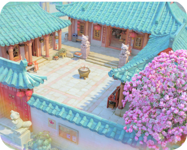
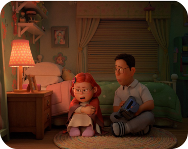
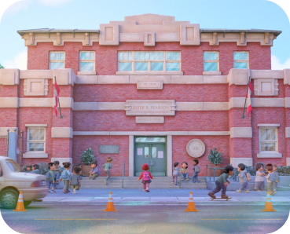
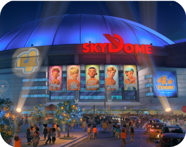

WORLBUILDING


Chinatown &
the Lee Family Temple
To create the film’s representation of Chinatown and the Lee family’s ancestral temple, artists did
extensive research—from careful analysis of two specific streets in Toronto’s real Chinatown to visiting
the Asian Museum of San Francisco—and collaborated with a host of consultants. “Cultural authenticity
was super important for us,” says director Domee Shi. “We took several trips to historic temples in
California built by early Chinese settlers just to get a feeling of what these grassroots temples are
like.”
the Lee Family Temple

Home & Bedroom
The Lees’ home is a perfect representation of the family’s Chinese Canadian lifestyle. And while Mei blends seamlessly into her household, joining mom and dad for homemade meals and watching TV alongside her mom, Mei’s growing pains come to light within the walls of her bedroom. At first glance, it is quite tidy for a teenager’s room. But—like Mei herself—there’s more to that story. Says sets art director Kristian Norelius, “I think she’s been trying to live up to her mom’s expectations by having everything sorted and organized. But hidden beneath the bed is evidence of her emerging self with new interests that she shares with her friends.”

Middle School
Several sequences take place within Mei’s middle school, showcasing her friendships and new interests away from her mother’s watchful eye (for the most part). Artists had to build the middle school with the film’s city setting in mind. Director Domee Shi pointed artists toward the school she attended—and sets supervisor Steve Karski actually found the blueprints for the school. “We used them as inspiration to see how an urban school in Toronto might be laid out,” he says.

The Concert
Mei and her friends are determined to attend the 4*Town concert, so filmmakers knew they’d need a spectacular venue for the occasion. Artists started with the actual dimensions of Toronto’s SkyDome, then played with the scale to find the sweet spot, allowing the climactic ending to unfold to its greatest potential.
Effects supervisor Dave Hale and his team studied live concerts to help build the effects for the concert sequences. “We did a bunch of stage fog, pyrotechnics and vapor geysers,” says Hale.